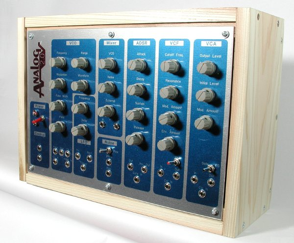

Analog2.0 は、手作り向けシンセサイザーシステムです。
設計と作り方は GitHub 上で公開されています。
Analog2.0 の本が帰って来ました。くわしくは こちら
書籍「アナログシンセサイザー自作入門」のサポートページは こちら
Analog2.0 基板の入手案内は準備中です。しばらくお待ち下さい。
サポートフォーラムはこちら。 湾岸電子音工房 へ

それではお楽しみください！